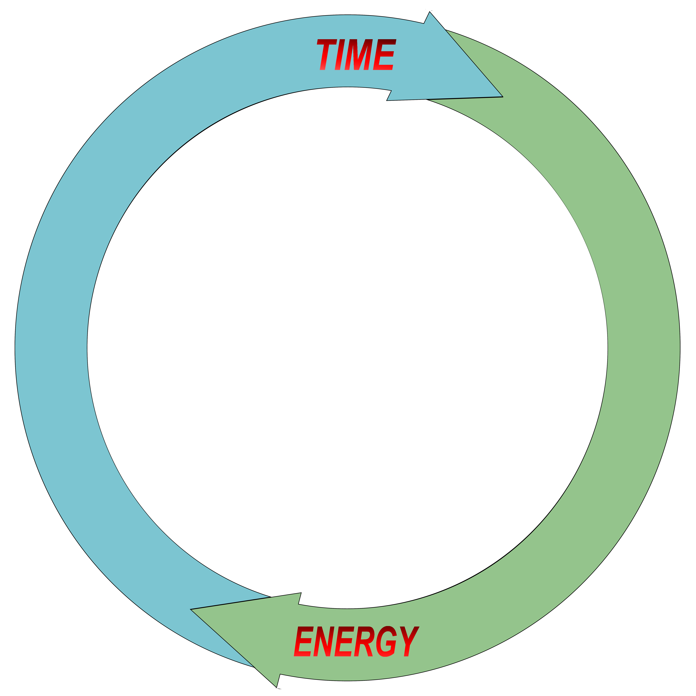
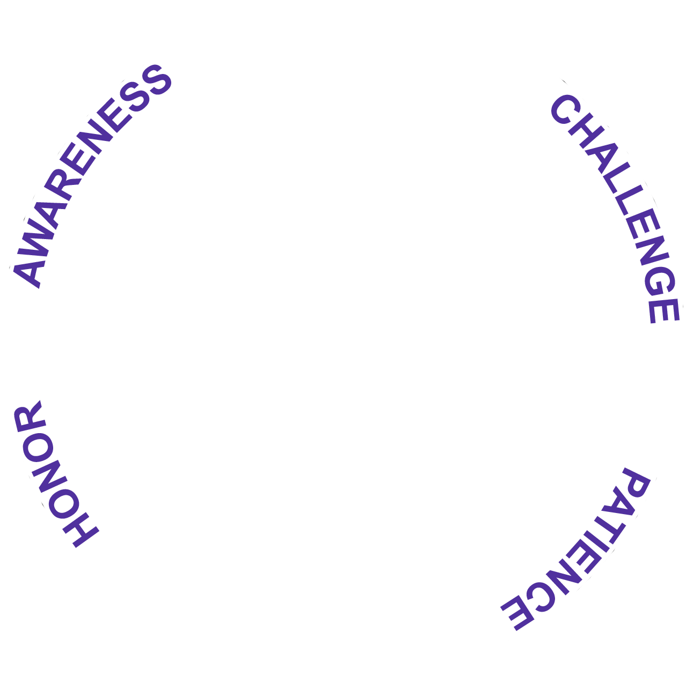
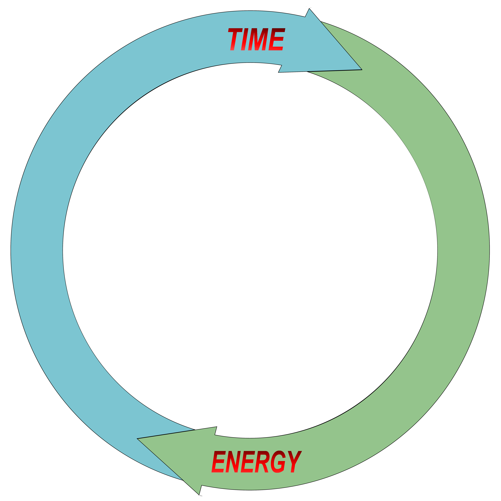
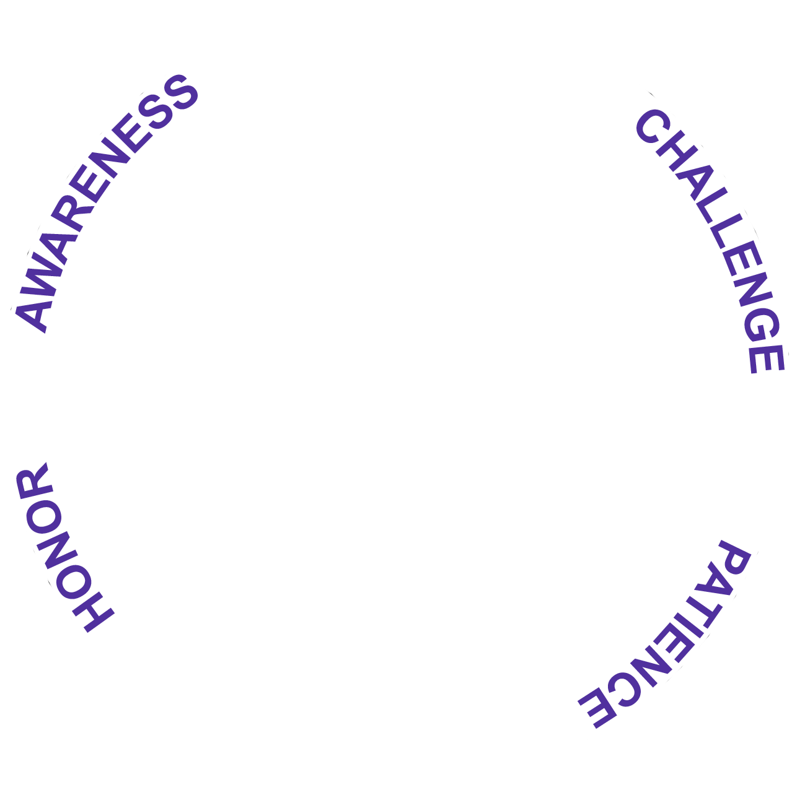

MANIFESTATIONS
Mindfulness is about being present with whatever you are doing, feeling, and thinking—without judgment.
Your actions, feelings, and thoughts are manifestations of your inner life.
Awareness of Manifestations
When you observe your manifestations as they arise—without labeling them good or bad—you begin to see how they affect the people and world around you.
This awareness of impact is at the heart of self-awareness. It allows you to recognize that:
- Your actions can lift someone up or bring them down
- Your feelings can spread calm or agitation
- Your thoughts can inspire hope or fear
Directing with Intention
By consciously directing your manifestations with productivity, peace, and purpose in mind, you remain rooted in the present moment—the only moment you truly have, and the only time when you can use your gifts.
Living this way ensures that your actions, feelings, and thoughts work together to create a life aligned with who you want to be.
Reflective Question:
What are your actions, feelings, and thoughts creating in the world around you—right now?
lm5_agreements
THREE GIFTS
Each of us is born with three Gifts:
1. A physical gift
2. An emotional gift
3. A spiritual gift
1. Our Physical Gift
Our physical gift is more than just a body that moves us from place to place—it is what has allowed humans to thrive across every continent and survive on almost any diet.
This gift exposed us to our first choices, permitting us to ask ourselves where we would like to live and what we would like to eat.
Unlike other animals who respond to environmental pressures through instinct and learned behaviors, we can consciously direct our physical capabilities toward chosen goals and values.
Through our senses, just like other animals, we experience the world. And with our emotions, we interpret it. But what makes us unique is that we don’t just react—we can notice what we are doing, feeling, and thinking, and then freely choose what to do, feel, or think next.
✨ This combination of awareness and intentional adaptability transforms our physical gift into a conscious tool for purposeful living.
Because of this gift, we were equipped with all the tools we need to be productive. Yet, unlike animals, we can pause, access our additional Sources of Knowledge, and choose how to respond in ways that reflect our values and intentions.
This ability—to direct time and energy deliberately, not just for survival but for chosen purposes—leads us into our next gift.
2. Our Emotional Gift
Our emotional gift is the ability to feel deeply and to choose who we love and connect with.
Unlike creatures driven solely by instinct, our awareness of feelings permits us to consciously select the people we love and the partners with whom we desire to build families.
Our emotions allow us to:
Empathize
lm6_obligations
LIMITED RESOURCES
Alongside these gifts, we must recognize that we have two finite resources:
1.Time
2. Energy
Humans are unique among species because we understand that these resources are limited and irreplaceable. This awareness allows us to go beyond pure instinct—storing intuitive and intellectual knowledge, learning from the past, and teaching others.
From the moment we are born, we have only so much time and only so much energy. We cannot create more of either. Every minute we are alive, we are spending both—whether we realize it or not. When they are gone, our physical life comes to an end.
Why Time and Energy Matter
Because these resources are finite, how we use them matters profoundly.
The choices we make, the relationships we build, and the knowledge we share are our way of touching eternity.
✨ Even after our bodies are gone, our energy does not leave the universe—it transforms into:
- The feelings we inspire
- The thoughts we leave behind
These shared feelings and thoughts continue to influence the collective consciousness of humanity, adding knowledge with our existence.
By using our time and energy wisely—on things that reflect our greatest intentions—we ensure that the imprint we leave is one of productivity, peace, and purpose.
A Lesson from Nature
It’s important to remember that we are part of the natural world. Like every animal, we must use our time and energy efficiently:
- A bird builds a nest
- A deer finds food
- A bee pollinates flowers
Each action is purposeful, contributing to survival and the balance of ecosystems.
In our own way, we too are tasked with being productive, creating peace, and fulfilling our purpose.
⚖️ Efficiency doesn’t mean rushing or overworking—it means directing your limited resources toward what truly matters.
Manifesting Our Existence
Our time and energy are always being utilized in three ways:
1. What we are doing physically
2. What we are feeling emotionally
3. What we are thinking spiritually
This is how we manifest our existence in each moment.
Let’s not be wasteful of these valuable and Limited Resources.
Reflective Question:
If your time and energy are the only resources you can’t get back, what are you choosing to spend them on today?
UNIQUE ABILITIES
You have two powerful and Unique Abilities:
1. Conscious Awareness
2. Free Choice
Awareness Beyond Instinct
Animals share consciousness with us; they are awake and alert, sensing their surroundings and responding to danger or opportunity. However, because they lack an awareness of time and energy, they are required to live in and for the present moment alone.
Their emotions, behaviors, and responses are guided by instinct—a set of predetermined directions that has kept their species alive for millions of years.
Human Awareness and Free Choice
Humans share this instinctual base, but our awareness of time and energy gives us an additional dimension.
We can:
- Remember and learn from the past
- Apply those lessons to the present
- Envision different futures
Our consciousness isn’t limited to reacting—it allows us to reflect on what we are doing, feeling, and thinking, and to choose how to use our gifts.
This ability to draw on knowledge from yesterday and use it today to shape tomorrow empowers us to plan, innovate, and change the course of our lives. Free choice means we decide how to respond, rather than simply following instinct.
Extending Our Impact
Beyond guiding our personal lives, these abilities allow us to contribute to the wider world.
Through awareness and choice, we can:
- Add intellectual and intuitive knowledge to the collective consciousness
- Influence change through imagination and creativity
- Innovate, teach, and inspire others
By sharing our insights, we help shape the world we live in and the future we leave to those who come after us.
✨ Our Unique Abilities empower us to see that there is more to our existence than what instinct alone intended to supply.
Reflective Question:
If you have the power to shape tomorrow through what you choose today, what kind of future are you creating right now?